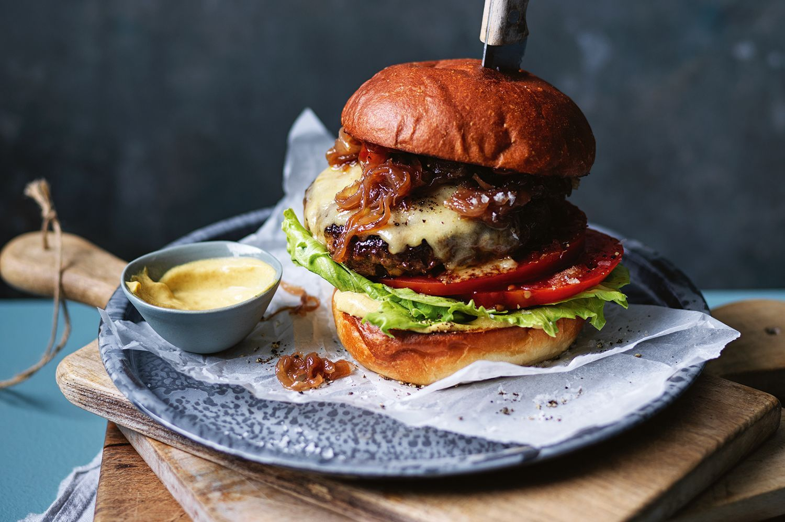

MAKING PERFECT VENISON BURGERS ISN’T HARD. ALL YOU NEED TO DO IS ADD A BIT OF FAT AND A FEW FLAVORS TO MAKE THIS UNDERRATED MEAT SHINE ON BURGER NIGHT.

The Perfect Venison Burger
Ah, venison burgers. A popular dish to make with
ground deer meat, but they often end up dry,
tough and gamey.
If you find that this is usually true for you,
you’re probably cooking venison burgers like you’re
cooking beef burgers. With just a few simple tricks,
you can take your wild game burger night to the next
level and start using up that ground venison you have
in the freezer.
Venison burgers are always a go-to in our house
year-round when we’re trying to use up ground
venison, and these honestly are so crazy flavorful
and juicy, I like them even more than traditional
beef or turkey burgers. The best part is the lean,
grass-fed, responsibly sourced protein.
Ingredients
- 1 lb. ground venison
- 2 tsp. balsamic vinegar
- 1/2 tsp. Worcestershire sauce
- 1 tsp. garlic powder
- 1/2 tsp. onion powder
- 1 tsp. salt
- 1/2 tsp. pepper
- 2 Tbsp. freezing cold butter, grated*
- Burger buns (brioche is best and toppings you like – cheese (we like Pepper or Colby Jack), lettuce, tomato, pickles, ketchup, etc.
Steps
- Before beginning, place a stick of butter in the freezer.
- If you’re cooking your burgers on a grill, go ahead and preheat the grill to medium-high (450-500F). If you’re cooking on a stovetop, get out a large pan (preferably cast-iron) and set it on the appropriate burner. You’re going to want to heat the pan for 3-5 minutes before cooking, so keep that in mind.
- Mix together the venison, balsamic, Worchestershire, garlic powder, onion powder, salt, and pepper. I like to use a fork and my hands. It’s good to use a fork to “fluff” and break up the meat, you don’t want it too packed.
- Right before you form the patties, grate in about 2 tablespoons of freezing cold butter (I use a regular, old cheese grater). Mix again quickly just to distribute, but not so much that the butter melts.
- Form the meat into 4 evenly sized balls and then shape them into patties. Form a divot in the top of the burgers to help catch some of the juice.
- Place the burgers on the grill or in the hot pan, and cook for anywhere from 5-8 minutes per side. I like to just flip the burgers once so they have a nice crust. If you’re using cheese, add your cheese when you flip your burger over.
- I use an internal read thermometer and pull my burgers at 140-145F (medium) but you can pull them at 150F-160F if you like yours more well done.
- Let your burgers rest for 5-10 minutes (SERIOUSLY) before assembling and eating. Voila!